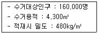
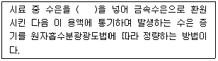
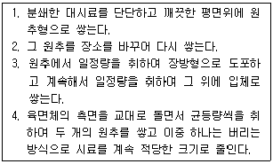
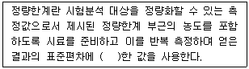
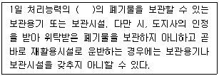
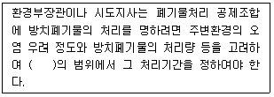

폐기물처리산업기사 (2013-03-10 기출문제)
1과목: 폐기물개론
1. 폐기물의 자원화를 위해 EPR의 정착과 활성화가 필요하다. EPR의 의미로 가장 적절한 것은?
- 폐기물 자원화 기술개발 제도
- 생산자 책임 재활용 제도
- 재활용 제품 소비 촉진 제도
- 고부가 자원화 사업 지원 제도
(정답률: 100%)

2. 새로운 수집 수송 수단중 pipe line을 통한 수송방법이 아닌 것은?
- 콘테이너수송
- 공기수송
- 슬러리수송
- 캡슐수송
(정답률: 83%)
3. 쓰레기 발생량을 예측하는 방법 중 쓰레기 배출에 영향을 주는 모든 인자를 시간에 대한 함수로 나타낸 후 시간에 대한 함수로 표현된 각 영향인자들 간의 상관관계를 수식화한 것은?
- 경향법
- 추정법
- 동적모사모델
- 다중회귀모델
(정답률: 85%)
4. 다음 중 수거노선에 대한 고려사항으로 틀린 것은?
- 발생량이 많은 곳을 우선 수거한다.
- 될 수 있는 한 한번 간 길은 가지 않는 것이 좋다.
- 언덕길을 올라가면서 수거하도록 한다.
- 될 수 있는 한 시계방향으로 수거노선을 정한다.
(정답률: 100%)
5. 3,600,000ton/year의 쓰레기를 5,500명의 인부가 수거하고 있다. 수거인부의 수거능력(MHT)은? (단, 수거인부의 1일 작업시간은 8시간, 1년 작업일수는 310일이다.)
- 2.68
- 2.95
- 3.35
- 3.79
(정답률: 94%)
6. 폐기물의 초기함수율이 65%이었다. 이 폐기물을 노천 건조시킨 후의 함수율이 45%로 감소되었다면 몇 kg의 물이 증발되었는가? (단, 초기폐기물의 무게 : 100kg 이고, 폐기물의 비중 : 1)
- 약 31.2kg
- 약 32.6kg
- 약 34.5kg
- 약 36.4kg
(정답률: 100%)
7. 적환장 설치 요건으로 잘못 설명된 것은?
- 수거해야 할 쓰레기 발생지역내의 무게 중심과 가장 먼 곳
- 간선도로와 쉽게 연결되고 2차적 또는 보조 수송수단 연계가 편리한 곳
- 적환 작업 중 공중위생 및 환경 피해 영향이 최소인 곳
- 건설과 운영이 가장 경제적인 곳
(정답률: 100%)
8. 삼성분이 다음과 같은 쓰레기의 저위발열량(kcal/kg)은?
- 약 890
- 약 990
- 약 1190
- 약 1290
(정답률: 89%)
9. 함수율 97%의 잉여슬러지 50m3을 농축시켜 함수율 89%로 하였을 때, 농축된 잉여슬러지의 부피는? (단, 잉여슬러지 비중은 1.0)
- 약 8m3
- 약 14m3
- 약 16m3
- 약 19m3
(정답률: 100%)
10. 부피 감소율이 90%로 하기 위한 압축비는?
- 4
- 6
- 8
- 10
(정답률: 94%)
11. 함수율 80%인 젖은 쓰레기와 함수율 20%인 마른 쓰레기를 중량비로 2 : 3으로 혼합하였다. 최종 함수율은?
- 32%
- 44%
- 56%
- 68%
(정답률: 64%)
12. 반경이 2.5m인 트롬멜 스크린의 임계속도는?
- 약 19 rpm
- 약 27 rpm
- 약 32 rpm
- 약 38 rpm
(정답률: 58%)
13. 어떤 쓰레기의 입도를 분석하였더니 입도누적 곡선상의 10%, 30%, 60%, 90%의 입경이 각각 2, 5, 10, 20mm 였다. 이때 곡률계수는?
- 2.75
- 2.25
- 1.75
- 1.25
(정답률: 86%)
14. 인구 3만인 중소도시에서 쓰레기 발생량 100m3/day(밀도는 650kg/m3)를 적재중량 4ton 트럭으로 운반하려면 1일 소요된 트럭 운반대수는? (단, 트럭의 1일 운반회수는 1회 기준)
- 11대
- 13대
- 15대
- 17대
(정답률: 95%)
15. 폐기물 조성이 다음과 같을 때 Dulong식에 의한 저위 발열량은(kcal/kg)은? (단, 3성분 : 수분 40%, 가연분 50%, 회분 10%, 가연분 조성 : C=30%, H=10%, O=5%, S=5%)
- 약 4,000
- 약 4,500
- 약 5,000
- 약 5,500
(정답률: 50%)
16. 쓰레기 파쇄기에 대한 설명 중 적절하지 못한 사항은?
- 전단파쇄기는 주로 목재류, 플라스틱류 및 종이류를 파쇄하는데 이용된다.
- 전단파쇄기는 대체로 충격파쇄기에 비해 파쇄속도가 느리고 이물질의 혼입에 대하여 약하다.
- 충격파쇄기는 기계의 압착력을 이용하는 것으로 주로 왕복식을 적용한다.
- 압축파쇄기는 파쇄기의 마모가 적고 비용이 적게 소요되는 장점이 있다.
(정답률: 84%)
17. 청소상태의 평가법 중 가로의 청소상태를 기준으로 하는 지역사회 효과지수를 나타내는 것은?
- USI
- TUM
- CEI
- GFE
(정답률: 93%)
18. 어느 도시의 1주일 쓰레기 수거상황이 다음과 같을 때 1일 쓰레기 발생량(kg/인ㆍ일)은?

- 0.43
- 1.84
- 1.95
- 2.19
(정답률: 85%)
19. 선별방식 중 각 물질의 비중차를 이용하는 방법으로 약간 경사진 평판에 폐기물을 흐르게 한 후 좌우로 빠른 진동과 느린 진동을 주어 분류하는 것은?
- Secators
- Stoners
- Table
- Jig
(정답률: 77%)
20. 인구가 200만명인 어떤 도시의 폐기물 수거실적은 504,970톤/년 이었다. 폐기물 수거율이 총 배출량의 75%라고 하면 이 도시의 1인 1일 배출량은? (단, 1년=365일, 총배출량 기준)
- 약 0.71kg
- 약 0.92kg
- 약 1.34kg
- 약 1.81kg
(정답률: 77%)
2과목: 폐기물처리기술
21. 5%의 고형물을 함유하는 500m3/day의 슬러지를 진공여과 시켜 75%의 수분을 함유하는 슬러지 케이크로 만든다면 하루 생산되는 케이크의 양은? (단, 비중은 1.0기준)
- 100m3
- 90m3
- 83m3
- 75m3
(정답률: 77%)
22. 쓰레기 열분해시 열분해 온도가 증가할수록 발생 가스 중 함량(구성비, %)이 증가하는 것은?
- 수소
- CH4
- CO
- 이산화탄소
(정답률: 42%)
23. 고형화 처리의 장점이라고 할 수 없는 것은?
- 폐기물 표면적이 증가하여 폐기물 성분을 줄인다.
- 폐기물의 독성이 감소한다.
- 폐기물 내 오염물질의 용해도가 감소한다
- 폐기물을 다루기 용이하게 한다.
(정답률: 72%)
24. 위생매립에서 주로 당일복토 대용품으로 사용되는 인공복토재의 조건으로 부적합한 것은?
- 미관상 좋아야 한다.
- 투수계수가 높아야 한다.
- 매립지 공간을 절약할 수 있어야 한다.
- 위생문제를 해결하여야 한다.
(정답률: 85%)
25. 100kL 처리용량의 분뇨처리장에서 발생되는 메탄올 사용하는 보일러에서 기대할 수 있는 열생산량은? (단, 가스생산량 = 8m3/kℓ(분뇨), CH4 함량 = 75%, CH4 열량 = 9,000kcal/m3 보일러 열교환 효율 = 80%, 기타조건 고려 안함)
- 4.32 × 106kcal
- 6.79 × 104kcal
- 8.64 × 106kcal
- 9.75 × 104kcal
(정답률: 77%)
26. 10kg의 탄소를 완전연소 시키는데 필요한 이론적 공기량은 몇 Sm3 인가?
- 약 89
- 약 97
- 약 106
- 약 113
(정답률: 69%)
27. 건조된 슬러지 고형분의 비중이 1.28 이며, 건조 이전의 슬러지 내 고형분 함량이 35% 일 때 건조 전 슬러지의 비중은?
- 1.038
- 1.083
- 1.118
- 1.127
(정답률: 93%)
28. 폐기물의 연소능력이 300kg/m2-hr이며 연소할 폐기물의 양이 250m3/day 이다. 1일 8시간 소각로를 가동시킨다고 할 때 로스톨의 면적은? (단, 폐기물의 밀도는 150kg/m3임)
- 13.8m2
- 12.7m2
- 14.5m2
- 15.6m2
(정답률: 92%)
29. 매립지의 합성차수막 중 PVC의 장·단점에 관한 설명으로 틀린 것은?
- 가격이 저렴하며 작업이 용이하다.
- 강도가 높다.
- 대부분의 유기화학물질에 강하다.
- 접합이 용이하다.
(정답률: 77%)
30. 이론 공기량을 사용하여 C4H10을 완전 연소시킨다면, 발생 되는 건 연소가스 중의 (CO2)max%는?
- 약 12%
- 약 14%
- 약 16%
- 약 18%
(정답률: 24%)
31. 배연 탈황시 발생된 슬러지 처리에 많이 쓰이는 고형화 처리법은?
- 시멘트 기초법
- 석회 기초법
- 자가 시멘트법
- 열가소성 플라스틱법
(정답률: 93%)
32. 분뇨의 총고형물(TS)이 40,000mg/L이고, 그 중 휘발성 고형물(VS)은 60% 이며, CH4의 발생량은 VS 1kg당 0.6m3이라면 분뇨 1m3당의 CH4 가스발생량은?
- 16.4m3
- 14.4m3
- 12.4m3
- 10.4m3
(정답률: 91%)
33. 매립지 표면차수막에 관한 설명으로 틀린 것은?
- 매립지 바닥의 투수계수가 큰 경우에 사용하는 방법이다.
- 매립 전이라면 보수가 용이하지만 매립 후는 어렵다.
- 지하수 집배수시설이 불필요하다.
- 차수막 단위면적당 공사비는 싸지만 매립지 전체를 시공하는 경우가 많아 총 공사비는 비싸다.
(정답률: 77%)
34. 다음 중 유동층 소각로의 장점이 아닌 것은?
- 상(床)으로부터 찌꺼기 분리가 용이하다.
- 반응시간이 빨라 소각시간이 짧다.
- 기계의 구동부분이 적어 고장율이 적다.
- 단기간 정지 후 가동시에 보조연료 없이 정상가동이 가능하다.
(정답률: 67%)
35. 인구 10,000명인 도시에서 1인 1일 쓰레기 배출량이 1.5kg이고 밀도가 0.45ton/m3인 쓰레기를 매립용량이 20,000m3인 트렌치에 매립, 처분하고자 할 때 트렌치의 사용일수는? (단, 매립시 쓰레기 부피감소율은 35% 이며, 기타조건을 고려하지 않음)
- 약 851일
- 약 924일
- 약 1,023일
- 약 1,152일
(정답률: 58%)
36. 폐기물을 완전 연소시키기 위한 소각로의 연소조건으로 가장 거리가 먼 것은?
- 충분한 체류시간
- 충분한 난류
- 충분한 압력
- 적당한 온도
(정답률: 58%)
37. 어느 매립지의 침출수 농도가 반으로 감소하는데 4년이 걸린다면 이 침출수 농도가 90% 분해되는데 걸리는 시간은? (단, 1차 반응기준)
- 11.3년
- 13.3년
- 15.3년
- 17.3년
(정답률: 84%)
38. 유해폐기물의 고화처리방법 중 열가소성 플라스틱법의 장단점으로 틀린 것은?
- 용출손실률이 시멘트 기초법 보다 낮다.
- 폐기물을 건조시켜야 한다.
- 고온분해되는 물질에는 사용할 수 없다.
- 혼합율이 비교적 낮다.
(정답률: 65%)
39. 유기물의 산화공법으로 적용되는 Fenton 산화반응에 사용되는 것으로 가장 적절한 것은?
- 아연과 자외선
- 마그네슘과 자외선
- 철과 과산화수소
- 아연과 과산화수소
(정답률: 100%)
40. CH3OH 3kg이 연소하는데 필요한 이론공기량은?
- 12 Sm3
- 15 Sm3
- 18 Sm3
- 21 Sm3
(정답률: 79%)
3과목: 폐기물 공정시험 기준(방법)
41. 취급 또는 저장하는 동안에 밖으로부터의 공기 또는 다른 가스가 침입하지 아니하도록 내용물을 보호하는 용기는?
- 기밀용기
- 밀봉용기
- 차단용기
- 밀폐용기
(정답률: 82%)
42. 다음은 시료 내 수은을 원자흡수분광광도법으로 측정할 때의 내용이다. ( )안에 옳은 것은?

- 시안화칼륨
- 과망간산칼륨
- 아연분말
- 이염화주석
(정답률: 95%)
43. '비함침성 고상폐기물'의 용어 정의로 가장 옳은 것은?
- 금속판, 구리선 등 기름을 흡수하지 않는 평면 또는 비평면형태의 변압기 내부부재를 말한다.
- 금속판, 구리선 등 수분을 흡수하지 않는 평면 또는 비평면형태의 변압기 내부부재를 말한다.
- 금속판, 구리선 등 기름을 흡수하지 않는 평면 또는 비평면형태의 변압기 외부부재를 말한다.
- 금속판, 구리선 등 수분을 흡수하지 않는 평면 또는 비평면형태의 변압기 외부부재를 말한다.
(정답률: 50%)
44. 시료의 강열감량(%)를 측정하기 위해 10g의 도가니에 20g의 시료를 취한 후 25% 질산암모늄용액을 넣어 탄화시킨 다음 600±25℃의 전기로 안에서 3시간 강열한 후 데시케이터에서 식힌 후 무게는 25g 이었다면 강열감량(%)은?
- 15%
- 20%
- 25%
- 30%
(정답률: 39%)
45. 시안(자외선/가시선 분광법)측정 시 정량한계로 옳은 것은?
- 0.01mg/L
- 0.001mg/L
- 0.003mg/L
- 0.0001mg/L
(정답률: 25%)
46. 다음이 설명하고 있는 시료 축소방법은?

- 구획법
- 원추 2분법
- 원추 4분법
- 교호삽법
(정답률: 82%)
47. 대형의 콘크리트 고형화물로써 분쇄가 어려울 경우에 시료채취에 관한 내용으로 옳은 것은?
- 임의의 5개소에서 채취하여 각각 파쇄하여 100g씩 균등 양 혼합하여 채취한다.
- 임의의 5개소에서 채취하여 각각 파쇄하여 200g씩 균등 양 혼합하여 채취한다.
- 임의의 6개소에서 채취하여 각각 파쇄하여 100g씩 균등 양 혼합하여 채취한다.
- 임의의 6개소에서 채취하여 각각 파쇄하여 200g씩 균등 양 혼합하여 채취한다.
(정답률: 80%)
48. 수은(자외선/가시선 분광법 기준)의 측정방법으로 틀린 것은?
- 디티존사염화탄소로 추출한다.
- 정량범위는 0.001~0.025mg 이다.
- 흡광도의 측정값이 0.2~0.8의 범위에 들도록 실험용액의 농도를 조절한다.
- 광원부의 광원으로는 주로 중공음극램프를 사용한다.
(정답률: 67%)
49. 원자흡수분광광도법에 의한 비소 정량에 관한 설명으로 틀린 것은?
- 과망간산칼륨으로 6가 비소로 산화시킨다.
- 아연을 넣으면 비화수소가 발생한다.
- 아르곤-수소 불꽃에 주입하여 분석한다.
- 정량한계는 0.0⑤mg/L이다.
(정답률: 72%)
50. 대상폐기물의 양이 600톤일 때 시료의 최소수는?
- 30
- 36
- 40
- 46
(정답률: 70%)
51. 이온전극법을 적용하여 분석하는 대상 물질은? (단, 폐기물공정시험기준(방법) 기준)
- 시안
- 비소
- 수은
- 유기인
(정답률: 55%)
52. 용출시험 방법에 관한 내용으로 틀린 것은?
- 시료의 조제방법에 따라 조제한 시료 100g 이상을 정확히 달아 정제수에 염산을 넣어 pH를 5.8~6.3으로한 용매(mL)를 시료:용매 = 1:10(W:V)의 비로 2,000mL 삼각플라스크에 넣고 혼합하여 시료용액을 조제한다.
- 시료용액의 조제가 끝난 혼합액을 매 분당 300회, 진폭이 4~5cm의 진탕기를 사용하여 6시간 연속 진탕한 다음 0.45㎛의 유리섬유여지로 여과한 것을 검액으로 한다.
- 시료용액의 조제가 끝난 혼합액을 진탕 한 후 여과가 어려운 경우에는 원심분리기를 사용하여 분당 3,000 회전 이상으로 20분 이상 원심 분리한 다음 상징액을 적당량 취하여 용출시험용 시료용액으로 한다.
- 용출시험 결과에 시료 중의 수분함량 보정을 위해 함수율 85% 이상인 시료에 한하여 “15/'(100-D)"를 곱하여 계산된 값으로 한다. (D는 시료의 함수율(%)이다.)
(정답률: 87%)
53. 다음의 온도에 관한 설명 중 틀린 것은?
- 냉수는 15℃ 이하를 말한다.
- 찬 곳은 따로 규정이 없는 한 0~15℃의 곳을 말한다.
- 상온은 15~25℃를 말한다.
- 온수는 70~80℃를 말한다.
(정답률: 67%)
54. 다음 내용 중 틀린 것은?
- 분석용 저울은 0.1mg 까지 달 수 있는 것이어야 한다.
- '약'이라 함은 기재된 양에 대하여 ±10% 이상의 차이가 있어서는 안 된다.
- 방울수라 함은 20℃에서 정제수 20방울을 적하할 때 그 부피가 약 1mL가 되는 것을 말한다.
- '항량'이라 함은 한 시간 더 같은 조건에 노출 시켰을 때 그 무게차가 0.1mg 이하인 것을 말한다.
(정답률: 74%)
55. 자외선/가시선 분광법에 의한 구리의 정량에 대한 설명으로 틀린 것은?
- 추출용매는 아세트산부틸을 사용한다.
- 정량한계는 0.002mg 이다.
- 비스무트(Bi)가 구리의 양보다 2배 이상 존재할 경우에는 청색을 나타내어 방해한다.
- 시료의 전처리를 하지 않고 직접 시료를 사용하는 경우 시료 중에 시안화합물이 함유되어 있으면 염산으로 산성 조건을 만든 후 끓여 시안화물을 완전히 분해 제거한 다음 시험한다.
(정답률: 84%)
56. pH 표준액의 종류가 아닌 것은?
- 수산염 표준액
- 프탈산염 표준액
- 염산염 표준액
- 붕산염 표준액
(정답률: 85%)
57. 폐기물 시료채취 용기에 표시하는 내용과 가장 거리가 먼 것은?
- 대상 폐기물의 양
- 시료의 양
- 채취 책임자 이름
- 폐기물 분석 내용
(정답률: 72%)
58. 수분 40%, 고형물 60%, 휘발성고형물 30%인 쓰레기의 유기물 함량(%)은?
- 35
- 40
- 45
- 50
(정답률: 47%)
59. 시료의 채취에 있어서 소각재의 경우 1회에 몇 g 이상을 채취하는가?
- 100g 이상
- 200g 이상
- 300g 이상
- 500g 이상
(정답률: 73%)
60. 다음은 정량한계에 관한 내용이다. ( )안에 옳은 내용은?

- 3배
- 5배
- 10배
- 15배
(정답률: 36%)
4과목: 폐기물 관계 법규
61. 폐기물처분시설 또는 재활용시설 중 의료폐기물을 대상으로 하는 시설의 기술관리인의 자격기준으로 틀린 것은?
- 수질환경산업기사
- 임상병리사
- 폐기물처리산업기사
- 위생사
(정답률: 78%)
62. 폐기물처리업의 변경신고 사항으로 틀린 것은?
- 운반차량의 증차 또는 임시차량의 감차
- 연락장소나 사무실 소재지의 변경
- 상호의 변경
- 대표자의 변경(권리, 의무를 승계하는 경우는 제외)
(정답률: 22%)
63. 시도지사는 관할 구역의 폐기물을 적정하게 처리하기 위해 환경부장관이 정하는 지침에 따라 몇 년마다 폐기물 처리에 관한 기본계획을 세워 환경부장관에게 승인을 받아야 하는가?
- 1년
- 3년
- 5년
- 10년
(정답률: 62%)
64. 가연성 고형폐기물의 에너지회수기준을 측정하는 기관과 가장 거리가 먼 것은?
- 한국환경공단
- 한국기계연구원
- 한국산업표준연구원
- 한국에너지기술연구원
(정답률: 50%)
65. 폐기물 처리업의 업종구분과 영업내용의 범위를 벗어나는 영업을 한 자에 대한 벌칙 기준은?
- 1년 이하의 징역이나 500만원 이하의 벌금
- 2년 이하의 징역이나 1천만원 이하의 벌금
- 3년 이하의 징역이나 2천만원 이하의 벌금
- 5년 이하의 징역이나 3천만원 이하의 벌금
(정답률: 59%)
66. 다음은 폐기물처리 신고자가 갖추어야할 보관시설과 재활용시설에 관한 내용 중 폐기물을 재활용하는 자의 기준(보관시설)에 관한 내용이다. ( )안에 옳은 내용은?

- 1일분 이상 30일분 이하
- 5일분 이상 30일분 이하
- 1일분 이상 60일분 이하
- 5일분 이상 60일분 이하
(정답률: 53%)
67. 위해의료폐기물의 종류별 해당 폐기물을 틀리게 짝지은 것은?
- 손상성폐기물 : 파손된 유리재질의 시험기구
- 혈액오염폐기물 : 혈액이 함유되어 있는 탈지면
- 병리계폐기물 : 시험, 검사 등에 사용된 배양액
- 생물, 화학폐기물 : 폐백신
(정답률: 62%)
68. 설치신고대상 폐기물처리시설의 규모 기준으로 옳은 것은?
- 소각열회수시설로서 1일 재활용능력이 10톤 미만인 시설
- 기계적 처분시설 또는 재활용시설 중 탈수, 건조시설로 1일 처분능력 또는 재활용능력이 100톤 미만인 시설
- 일반소각시설로서 1일 처분능력이 100톤(지정폐기물의 경우에는 5톤) 미만인 시설
- 생물학적 처분시설 또는 재활용시설로서 1일 처분능력 또는 재활용능력이 100톤 미만인 시설
(정답률: 60%)
69. 폐기물처리 신고자에게 처리금지를 갈음하여 부과할 수 있는 최대 과징금은?
- 1천만원
- 2천만원
- 5천만원
- 1억원
(정답률: 알수없음)
70. 환경부령으로 정하는 폐기물처리시설의 설치를 마친 자는 환경부령으로 정하는 검사 기관으로부터 검사를 받아야 한다. 폐기물처리시설이 매립시설인 경우, 검사시관으로 틀린 것은?
- 한국건설기술연구원
- 한국산업기술시험원
- 한국농어촌공사
- 한국환경공단
(정답률: 46%)
71. 지정폐기물의 종류 중 폐석면의 기준으로 옳은 것은?
- 건조고형물의 함량을 기준으로 하여 석면이 1%이상 함유된 제품, 설비(뿜칠로 사용된 것은 포함한다)등의 해체, 제거 시 발생되는 것
- 건조고형물의 함량을 기준으로 하여 석면이 2%이상 함유된 제품, 설비(뿜칠로 사용된 것은 포함한다)등의 해체, 제거 시 발생되는 것
- 건조고형물의 함량을 기준으로 하여 석면이 5%이상 함유된 제품, 설비(뿜칠로 사용된 것은 포함한다)등의 해체, 제거 시 발생되는 것
- 건조고형물의 함량을 기준으로 하여 석면이 10%이상 함유된 제품, 설비(뿜칠로 사용된 것은 포함한다)등의 해체, 제거 시 발생되는 것
(정답률: 74%)
72. 사업장폐기물의 종류별 분류번호로 옳은 것은? (단, 지정폐기물 외의 사업장 폐기물의 분류번호)
- 유기성오니류 31-01-00
- 유기성오니류 41-01-00
- 유기성오니류 51-01-00
- 유기성오니류 61-01-00
(정답률: 89%)
73. 폐기물 처분시설 또는 재활용시설의 검사기준에 관한 내용 중 멸균분쇄시설의 설치검사 항목으로 틀린 것은?
- 분쇄시설의 작동 상태
- 자동기록장치의 작동 상태
- 계량시설의 작동 상태
- 밀폐형으로 된 자동제어에 의한 처리방식인지 여부
(정답률: 34%)
74. 다음은 방치폐기물의 처리기간에 관한 내용이다. ( )안에 옳은 내용은?

- 1개월
- 2개월
- 4개월
- 6개월
(정답률: 88%)
75. 폐기물처리시설 주변지역 영향조사 기준 중 조사방법(조사지점)에 관한 내용으로 틀린 것은?
- 미세먼지와 다이옥신 조사시점은 해당시설에 인접한 주거지역 중 2개소 이상 지역의 일정한 곳으로 한다.
- 악취 조사지점은 매립시설에 가장 인접한 주거지역에서 냄새가 가장 심한 곳으로 한다.
- 토양조사지점은 매립시설에 인접하여 토양오염이 우려되는 4개소 이상의 일정한 곳으로 한다.
- 지표수 조사지점은 해당 시설에 인접하여 폐수, 침출수 등이 흘러들거나 흘러들 것으로 우려되는 지역의 상, 하류 각 1개소 이상의 일정한 곳으로 한다.
(정답률: 67%)
76. 폐기물처리업자의 폐기물 보관량 및 처리기한에 관한 내용 중 폐기물 재활용업자가 임시보관시설에 폐기물(폐전주로 한정한다)을 보관하는 경우에 대한 기준으로 옳은 것은?
- 3월부터 11월까지 : 중량 100톤 미만
- 3월부터 11월까지 : 중량 200톤 미만
- 12월부터 다음 해 2월까지 : 중량 100톤 미만
- 12월부터 다음 해 2월까지 : 중량 200톤 미만
(정답률: 47%)
77. 주변지역 영향 조사대상 폐기물 처리시설 기준으로 옳은 것은?
- 매립면적 1만 제곱미터 이상의 사업장 일반폐기물 매립시설
- 매립면적 3만 제곱미터 이상의 사업장 일반폐기물 매립시설
- 매립면적 5만 제곱미터 이상의 사업장 일반폐기물 매립시설
- 매립면적 15만 제곱미터 이상의 사업장 일반폐기물 매립시설
(정답률: 70%)
78. 폐기물 발생 억제 지침 준수의무 대상 배출자의 규모 기준으로 옳은 것은?
- 최근 3년간 연평균 배출량을 기준으로 지정폐기물 외의 폐기물을 300톤 이상 배출하는 자
- 최근 3년간 연평균 배출량을 기준으로 지정폐기물 외의 폐기물을 600톤 이상 배출하는 자
- 최근 3년간 연평균 배출량을 기준으로 지정폐기물 외의 폐기물을 1천톤 이상 배출하는 자
- 최근 3년간 연평균 배출량을 기준으로 지정폐기물 외의 폐기물을 3천톤 이상 배출하는 자
(정답률: 알수없음)
79. 의료폐기물 전용용기 검사기관과 가장 거리가 먼 것은?
- 한국환경공단
- 한국화학융합시험연구원
- 한국재료시험연구원
- 한국건설생활환경시험연구원
(정답률: 62%)
80. 기술관리인을 두어야할 폐기물처리시설 기준으로 옳은 것은?
- 소각열회수시설로서 시간당 재활용능력이 100킬로그램 이상인 시설
- 소각열회수시설로서 시간당 재활용능력이 125킬로그램 이상인 시설
- 소각열회수시설로서 시간당 재활용능력이 200킬로그램 이상인 시설
- 소각열회수시설로서 시간당 재활용능력이 600킬로그램 이상인 시설
(정답률: 40%)